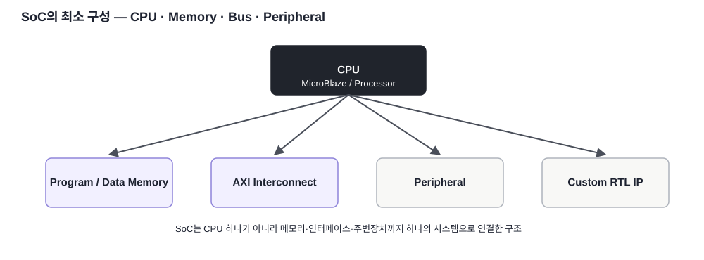
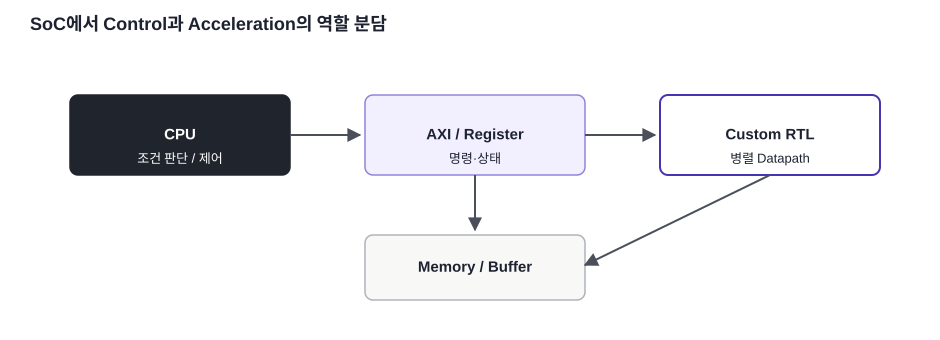

핵심 구조
CPU + Memory + Bus + Peripheral이 하나의 시스템을 구성합니다.
FPGA / SoC 개념 · 04
SoC를 CPU 하나가 아니라 CPU·Memory·Bus·Peripheral·Custom Logic이 결합된 시스템으로 이해합니다.
CPU + Memory + Bus + Peripheral이 하나의 시스템을 구성합니다.
MicroBlaze를 중심으로 FPGA 안에 SoC 구조를 직접 조립할 수 있습니다.
CPU·Memory·Peripheral 관계를 더 구체적으로 봅니다.

SoC(System-on-Chip, 하나의 칩에 여러 시스템 기능을 통합한 반도체)는 CPU만을 뜻하지 않습니다. Program/Data Memory, Bus, Peripheral, Interrupt, Debug, Clock/Reset, 필요하면 Hardware Accelerator까지 하나의 시스템으로 결합됩니다.
CPU는 명령어를 실행하고 시스템 상태를 관리하는 Control 역할에 강합니다. FPGA Custom RTL은 병렬 Datapath를 직접 만들 수 있어 반복 연산이나 정해진 신호 처리에 유리합니다. SoC 설계에서는 이 두 영역을 적절히 나누는 것이 중요합니다.

Basys3에는 Hard ARM CPU가 없으므로 MicroBlaze Soft Processor를 FPGA Logic에 구현합니다. 따라서 CPU가 실제로 어떤 자원을 사용하고 BRAM·AXI와 어떻게 연결되는지 눈으로 확인하기 좋습니다.
본문의 기술 내용과 교육용 재작성 그림은 아래 공식 문서를 기준으로 검증했습니다. 원문 전체를 복제하지 않고 핵심 구조를 학습용으로 재구성했습니다.